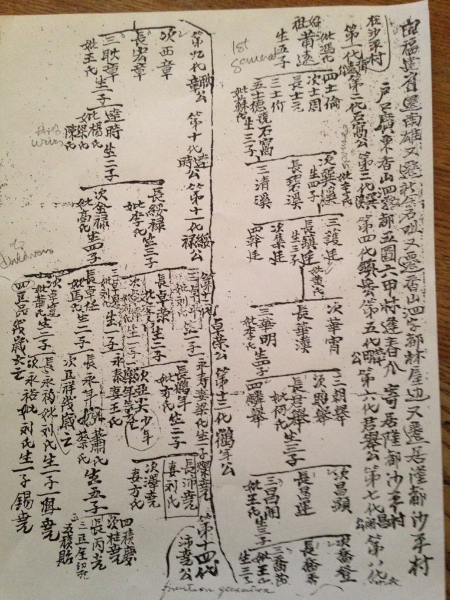
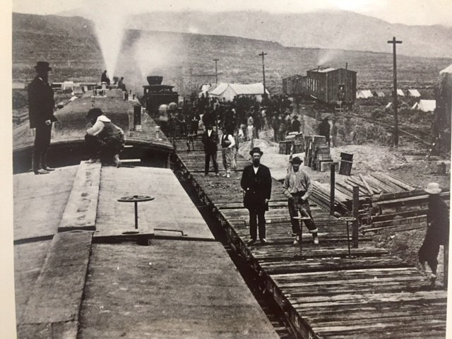
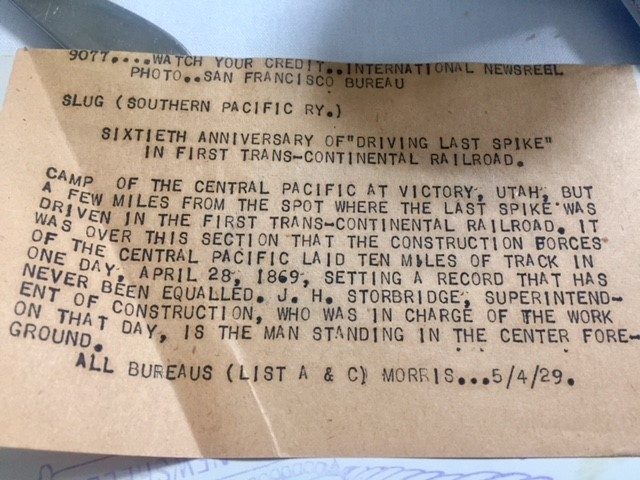
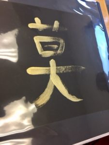

Web exclusive essay | Printable version (PDF)
© 2019 Stanford University Chinese Railroad Workers of North America Project
Connie Young Yu
Independent Scholar
The “Big Four” imported thousands of Chinese workers to build the transcontinental railroad without expecting them to settle down, raise families, and become Americans. They were not made welcome outside of their employment as laborers. In narratives of the West, Chinese railroad workers are depicted as masses of worker bees, swarming over mountains and plains, nameless, faceless, devoid of humanity. The anti-Chinese movement of the 1870s and resulting federal exclusion laws kept Chinese from being true immigrants and denied their offspring participation in American society. The fact that Chinese workers played a major role in building America’s greatest engineering enterprise of the nineteenth century was wiped from national memory.
Stanford University’s Chinese Railroad Workers in North America Project, directed by Gordon Chang and Shelley Fisher Fishkin, is rectifying this serious omission and correcting history. Key to closing the gap in this American narrative is the testimony of descendants. As coordinators of the oral history component of the project, Barre Fong and I conducted close to fifty interviews from early 2013 through spring 2018. Finding information on nineteenth-century railroad workers from descendants three, four, or five generations removed seemed a long shot, but we uncovered surprising revelations from descendants dedicated to the legacy of their forebears.
While we did not find accounts written by railroad workers themselves or photographs of identifiable workers when they were young and on the job, we did uncover proof of their lives and their contributions to railroad building. It is not known how many workers returned permanently to their native Guangdong Province in China after their labors on the railroad, but we do know a significant number remained to put down roots in the United States, and their families were the foundation of Chinese American society.
Video recorded by Barre and interviewed by both of us, the descendants have generously shared documentation, memorabilia, and stories passed down from one generation to another. It helped that Barre and I are American-born Chinese from pioneer families and that we can identify with the descendants we interviewed. We can recognize the significance of the documents and memorabilia shown to us and understand why some things have been hidden away so long. As the great-granddaughter of a Central Pacific Railroad (CPRR) worker-turned-merchant, I am quite familiar with the immigration documents and identity papers required of Chinese during the exclusion era.
As we wind up our oral history project, we feel that we have gleaned as much as we can about the Chinese building the railroad. What we have learned, most significantly, is how Chinese American society developed. The oral histories of the project span 150 years, touching on every milestone of Chinese America. We heard stories of ancestors who were in California even before the gold rush. There are interviews of descendants of different generations, from a ninety-nine-year-old flower grower to a computer programmer in his thirties. We learned that railroad workers came not only from Taishan, but also from other districts in Guangdong Province, notably Zhongshan (formerly Heung-san).
There are common threads running through the interviews. Descendants related episodes of their railroad ancestors finding other jobs, marrying, raising children, surviving the violent anti-Chinese movement, and, with the following generation, circumventing federal exclusion laws to come to America. Some told stories of their grandparents’ support of Sun Yat-sen and community activism. There were descendants who followed the “paper trail” at the National Archives in San Bruno, California, and shared with us copies of their ancestors’ testimonies when they were interrogated on Angel Island in San Francisco Bay. Several elderly descendants spoke of how World War II was the turning point in their lives and how finally they felt included in America. We interviewed a WWII veteran who served in Europe and a woman who worked as a bullet inspector in a munitions factory in Colorado. Many of the descendants spoke of their own struggles in employment and housing before the civil rights era, and how their children finally have succeeded in mainstream America.
The overriding theme to be derived from Chinese railroad worker descendant interviews is the hardship, struggle, and sacrifice of ancestors who came to build the railroad, making it possible for their descendants to thrive in the United States today. The young Cantonese villagers worked on the railroad not only for their own survival but so they could send part of their hard-earned wages to feed families back home. With the Exclusion Act of 1882, Chinese migration to America became a broken chain migration, yet there was always the unbreakable link between “Gold Mountain” (Gum San) and the workers’ ancestral villages. Cantonese overseas kept a connection to these villages as they struggled to make their new lives in America. We are grateful to all the descendants of railroad workers who participated in this project, giving of their hearts and minds. They provided us a new narrative about Chinese in America, and it truly is a people’s history.
History from Descendants: Three on the Payroll
Conducting oral histories of descendants of Chinese railroad workers was uncharted territory for Barre and me, but our interviewees were our dependable guides. There were descendants on the path of discovery themselves, long dedicated to the search for their respective railroad ancestor. We learned in the course of our oral history project that there is always one individual per generation who is the caretaker of the family legacy. We interviewed three such descendants: Gene O. Chan, Vicki Tong Young, and Paulette Lum, each having found proof that his or her ancestor worked on the CPRR.
There is no way that the name of each of the 12,000 Chinese railroad workers was recorded on the Central Pacific payroll. Typically, Chinese laborers were paid directly by the headman, or foreman, of their assigned work crew. The payroll records are incomplete, and those that exist show listings of Chinese, agents, foremen, and workers on certain jobs paid directly by the railroad company. Most of these names are indistinct, as they began with the title Ah, which was like Mr., as in Ah Lee, Ah Key. But there are some names of workers that are recognizable by descendants searching for them. Here are stories of three workers on the CPRR payroll: Jim King, Lum Ah Chew, and Mock Chuck, each with information submitted by their respective descendant.
Jow Kee, a.k.a. Jim King | Great-grandfather of Gene O. Chan
Born on June 21, 1932, in Locke, California, Gene O. Chan is the fourth generation of his family in the Sacramento delta region in northern California. After the videotaping of the interview at his home in Sacramento, on June 27, 2014, Gene showed us a folder of papers, including the certificate of residence belonging to his great-grandfather, Jow Kee, a.k.a. Jim King, the first of his family to come to America (Figure 1). It was a “eureka” moment for Barre and me. We had in our hands the certificate of residence of a Chinese immigrant who was on the payroll of the CPRR during the building of the first transcontinental railroad. Jow Kee is identified as a Chinese laborer, a fifty-five-year-old farmer of Isleton, California. Dated February 27, 1894, the document designated the bearer as a Chinese legally residing in the United States.
{kind=link}
If Jow Kee was stopped by authorities and found without possession of this all-important paper, what the Chinese referred to as the chak chee, he would be detained, questioned, and threatened with deportation. This identification was required of all Chinese in America by the terms of the Geary Act, which extended the Chinese Exclusion Act of 1882, prohibiting the entrance of Chinese laborers for another ten years. The Geary Act mandated that every Chinese register, be photographed, and carry this identity paper at all times. When Congress passed the act on May 5, 1892, the Chinese Consolidated Benevolent Association (referred to as the “Six Companies”) challenged the ruling before the Supreme Court, requiring each Chinese to contribute a dollar (a day’s wages) toward the legal fees. Jow Kee, like all his kinfolk, participated in civil disobedience and refused to register. Despite this wide-scale resistance, the Supreme Court upheld the Geary Act, and Jow Kee and thousands of fellow Chinese had to comply with the law and register in 1894.
Growing up in a household of three generations of Kings, Gene O. Chan always heard stories of his pioneer ancestors who were prominent in the close-knit Chinese community in the delta towns of Courtland, Isleton, and Walnut Grove. He delved into family history initially to research his heroic uncle, his mother’s brother, Bill Chow King (Chow Wai Lum), who was a legendary Flying Tiger pilot of World War II. Gene’s curiosity about his idol, Uncle Bill, led to discoveries about his great-grandfather, Jim King, who worked for the CPRR. Gene is grateful to his mother, Lillian, for being the keeper of the family legacy. She was the third child of Tai King, who was the fourth child of Jow Kee, a.k.a. Jim King.
Recalls Gene about his mother: “She was meticulous about saving things. I started looking though things at our house in Locke, albums of pictures Uncle Bill sent home from China, all the letters he wrote his mom, Tai King. My mom had a box with documents. This is how I have the certificate of residence of my great-grandfather. I started to put two and two together.”
Besides the collection of family documents, Gene would reference a paper, “Three Generations of the King Family,” written in 1979 by his uncle Tom King, the son of Kim King, Jim King’s number three son. In writing this article, Tom King hoped that the next generation would continue this history. He wrote that his ancestor Jim King was a pioneer in the Sacramento delta and possibly one of the early Chinese workers hired by the CPRR. It was his nephew Gene who would confirm this, finding the name Jim King listed as a contracting agent on the CPRR payroll for January 1866 archived at the California State Railroad Museum in Sacramento. He then added this fact to his uncle’s narrative, and with documents his mother had kept, he was able to piece together the story of his great-grandfather, a builder of the first transcontinental railroad.
A summary: Jow Kee was born in the village of Sun Chung in Heung-san in 1840. When he was fifteen he boarded a clipper ship in Hong Kong bound for Gum San. The year was 1855, and even though Chinese were being driven out of the gold discovery districts in the western part of the United States, Jow Kee found work at an American mining company. He was industrious, smart, and well liked by his white bosses, who dubbed him Jim King. For ten years he was in the mining business. King would continue as the family surname through succeeding generations, although in Chinese it was still Jow (Chow). In 1865 the CPRR faced a serious labor shortage while building the western portion of the line and started hiring Chinese laborers. Jim King would be among this early group. He had ten years of related work experience and could speak English as well as Chinese. He became a key contractor for Chinese laborers, hiring them from towns and work camps in California.
After the completion of the transcontinental railroad, Jim King went to work on the major construction project of building levees in the Sacramento delta. As a labor contractor, he provided employment for many former railroad workers and also hired fellow kinsmen from Heung-san in the period before the Chinese Exclusion Act. After the levees were built, Jim King became a tenant farmer, overseeing fields and fruit orchards.
While in San Francisco’s Chinatown one night, Jim King saw a girl crying in the street. Speaking with her, he learned her name, Hel Shee, and that she was trying to escape from her master. He went to her owner and bought out her contract. The two married and settled in a farmhouse in the delta, at Boyd Green’s ranch, one mile north of Courtland. Between 1874 and 1883 Hel Shee gave birth to eight children, two girls and six boys, in that order.
Tom King’s paper offers a rare glimpse of the life of a pioneer Chinese woman. Hel Shee was strong-willed, resourceful, and unusually assertive for her time.
His wife was a hard-working, wise and a very frugal woman. She earned money mainly by making fishing nets. She was also a seamstress. She saved her money from these activities … over a period of twenty years she saved a small fortune. She took sons number one, two, four, five and six plus number two daughter and her daughter’s husband back to China in 1895.
Before departing on a trip to China, the King children needed affidavits to facilitate their landing upon return to the United States. Each of King’s children had to undergo an intensive interrogation to prove they were who they claimed to be. Two white witnesses were required to verify the fact they were born in California and that their father was indeed Jim King/Jow Kee, a longtime resident of Courtland. Gene O. Chan has copies of these immigration testimonies, a paper trail that is key to his family history.
With his wife and children in China, Jim King remained on the farm in Courtland. His wife had taken their sons to China so they could find wives, but Kim King, the number three son, did not want to go and stayed in California with his father.
In 2008 Gene O. Chan wrote a timeline of the life of his great-grandfather. The ending is mysterious and sad. This is the final entry:
1898−1899 Jow Kee aka Jim King was missing near Isleton, where he was farming after his wife left for China. His body was never found and foul play cannot be ruled out since major anti-Chinese violence was still occurring in nearby Antioch and throughout the Sacramento Delta. Another theory is that he somehow fell in the river or slough and drowned. Son number three who did not go with his mother to China searched all over the valley and rivers without success.
Lum Piu Chew | Great-grandfather of Paulette Liang
Lum Piu Chew, known as Lum Ah Chew, was living in California before construction began on the Central Pacific (Figure 2). There are similarities between Ah Chew’s life and Jow Kee’s. Like Jow Kee, Lum Ah Chew was from the district of Heung-san in Guangdong Province, and he also went to build levees in the Sacramento delta after the completion of the Central Pacific. Ah Chew raised a family in Courtland and farmed there for over forty years. In 1906 he died in the orchard he was tending.
Paulette Liang, born in Fresno and raised in Courtland, always knew her ancestor worked on the railroad. Her mother was the family historian, and Paulette would carry on this tradition. As with Gene O. Chan’s saga, it was the mother who was the keeper of the family documents that established the “paper trail” for subsequent generations to follow.
{kind=link}
Paulette Liang, the great-granddaughter of Lum Ah Chew, had a deep interest in her family history, and tracing it became a lifelong project. Paulette undertook serious archival research, finding Ah Chew’s name in the 1860 census for San Francisco and on the 1866 payroll of the CPRR (Figure 3). His name appears on the payroll a number of times, listed as a cook or waiter. In August 1866 he is listed as a cook and was paid $1.15 a day (as a waiter he was paid only 66 cents a day). He was literate in English and must have done other work for the railroad, although Paulette has yet to find documentation of this, other than family lore that he worked on the “Iron Road.”
{kind=link}
There is, however, much known about Lum Ah Chew’s life and work in the delta. After his first wife died, he married a nineteen-year-old woman in 1881, also from Heung-san, who came to California when she was fourteen years old, in 1877. She was very capable and would eventually travel twice to China to arrange marriages for her sons.
The ties to the village in Heung-san were very strong, even though Ah Chew and so many of his fellow kinsmen had arrived as teenagers. No Chinese male acted alone on coming to America. There was always the nuclear family, the clan, and the village who depended on his success. There were good wages in Gum San, and in the 1860s the top pay was for working on the railroad. From the railroad Lum Ah Chew established a foothold in America and then a promising future in the rich agricultural lands of California. But because of the intense discrimination toward Chinese in the United States, as well as threats of violence and expulsion, he and his wife saw their future in China. As Paulette explains, her ancestors built houses in China so there would be a home to go to if they were driven out of Gum San. It was their safety net. Paulette’s great-grandmother went back to China to arrange marriages for her two younger sons and had three houses built for their three sons in their village. But the sons married and returned to America with their brides.
Chauncy Chew, Paulette’s paternal grandfather, was an entrepreneur and merchant and the most famous of the family in the delta. He was the oldest son of Lum Ah Chew, and Paulette’s mother, Edna Lum Chew, was Chauncy’s daughter (Figure 4). 
{kind=link}
Both Ah Chew, the railroad worker, and his son Chauncy were active in the Chinese revolutionary movement in the United States, supporting Sun Yat-sen in overthrowing the Manchus and establishing China as a republic. Chauncy was an important leader of the Chinese in the Sacramento delta and head of the Kuomintang chapter in Courtland.
Paulette’s family was very proud of the fact Sun Yat-sen came to visit Courtland and stayed at the house of Lum Ah Chew. Delta Chinese, being mostly Heung-san people, were inspired by Sun Yat-sen and contributed generously to the revolutionary cause. Despite the fact the family of Ah Chew had houses in the village in Guangdong and were dedicated to the birth of the republic, however, they lived all their lives in the Sacramento area. Ah Chew and his wife were buried, not in their ancestral district in China, but in Franklin Cemetery in Sacramento.
Mock Chuck | Great-grandfather of Vicki Tong Young
Vicki Tong Young, interviewed by Barre Fong in May 15, 2015, gave a remarkable account of three generations of her family who struggled during the exclusion era and survived the hardships of a broken chain migration. Mock Chuck was her paternal great-grandfather, the first of the family to come to America. It was the family heirloom, an eighteen-carat gold watch inscribed with the name Mock Chuck that inspired Vicki to look for the story behind it (Figure 5). The watch was given to him by a Southern Pacific Railroad official named M. A. Colby to honor his service as the main labor contractor who hired Chinese to build the railroad route from Tehachapi Pass in Kern County, California, to Los Angeles. [By this time the Central Pacific had been absorbed into the Southern Pacific Railroad.]
{kind=link}
From oral history accounts of her family, Vicki learned that Mock Chuck was born in Yin Ping (Enping) in 1847 and came to the United States around 1864 when he was seventeen years old. He spoke the Sze Yup dialect and was studying to be an herb doctor.
To look for evidence of her ancestor’s work on the railroad, Vicki used William Chew’s book, Nameless Builders of the First Transcontinental Railroad (Victoria, B.C.: Trafford Publishing, 2004) along with payroll records. She conducted a great deal of research online, including seeking relevant information on the website ancestry.com. She visited the National Archives in San Bruno to find family immigration records and testimonies, and her quest continues.
Here is Vicki Tong Young’s summary account of Mock Chuck’s railroad work:
One of his uncles was a cook on the railroad and helped Mock Chuck get hired on the Central Pacific as a headman for Chinese workers. He and his crews were on the CPRR payrolls on eleven different months for May 1865 and from January 1866 to September 1866, with his name appearing frequently as Ah Chuck. In the peak month of April 1866 he and his crews toiled 727½ man-days to pick through the granite mountain to build a tunnel. That same month he was a waiter for the Irish crew at Camp 29 for three days, because he could speak English. On this job he was paid 66 cents per day [Figure 6. Note: This was the same pay Lum Ah Chew had earned as a waiter.]
{kind=link}
In the CPRR payroll records from July 1866, the words “Sisson’s China Labour,” the contractor who hired Chinese workers, appear at the top left corner (Figure 7). Vicki explains: “Abe Callaway was the Irish foreman paired with Mock Chuck, and their names appear side by side. Mock Chuck had a payroll record for every month in 1866 that A. Callaway was listed as the foreman. They were employed by the CPRR exactly at the same time while they were excavating the highest tunnel on Donner Summit, and winter was coming. With snow falling in August, they both quit in September 1866 before the winter of 1866−1867, the worst on record, with snowdrifts as high as forty feet.”
{kind=link}
At the National Archives in San Bruno Vicki found a photo of Mock Chuck (Figure 8) with the immigration record of his son, who was not admitted to the United States until 1906. After his son had been denied entry twice, Mock Chuck hired a lawyer to plead his case. This picture was taken circa 1905. He signed his name Mock Chuck, and there is no Chinese character of his surname on record.
{kind=link}
After the completion of the transcontinental railroad, Mock Chuck became a merchant, supplier, labor contractor, and banker for fellow Chinese. Around 1897 he opened an herb and general merchandise store in Los Angeles and had an employment agency. He was very proud of the gold watch given to him in acknowledgment and gratitude for his railroad work. Vicki recounts from family lore, “He wore it with a Chinese gold chain and a solid gold peanut, which he would swing as he walked around town.”
Descendants and the Stanford Connection
It was not in our capacity to interview everyone who filled out a questionnaire or who was referred to us as a railroad descendant. We needed to be selective. In the final phase of our oral history project, Barre and I sought to interview only those descendants with relevant memorabilia or a unique story. We had hoped to find someone with a railroad ancestor’s diary, in Chinese or English, but we were unable to.
There are many Chinese Americans who can say they are railroad descendants, but few can provide evidence of their first kinfolk in the United States. Yet over the five-year course of our project we have talked with a number of descendants who have done serious archival research, checked census and immigration records, and have documentation to go with family legends. We saw common threads interwoven in these ancestral narratives. In some interviews I had the feeling that our respective kinfolk crossed paths in one journey or another.
It so happened that each of the last three people we interviewed were descendants of ancestors with a connection to Leland and Jane Stanford and The Farm, the Stanfords’ 8,200-acre farm in Palo Alto, California, that they later deeded for development of Leland Stanford Junior University (today’s Stanford University). What their interviews revealed of their respective family legacies brings our CRRW story to life and our oral history project to a full circle.
Moy Jin Mun | Montgomery Hom, great-grandson
Montgomery Hom is the maternal great-grandson of Moy Jin Mun and the family’s keeper of the memorabilia of his illustrious ancestor’s life, most striking of which are artifacts connected to the transcontinental railroad.
Moy (1848−1936) was one of the most prominent and respected Chinese in America during his lifetime. He was a gold miner, agent for the Central Pacific, an importer-exporter, one of the organizers of the Six Companies, the key arbiter of disputes between fighting tongs (secret societies), and the first Chinese interpreter for the US District Circuit Court of California.
I met Montgomery “Monty” Hom in 1991 when he was making They Served with Pride, a documentary on Chinese Americans in World War II shown on PBS. A resident of Los Angeles, he was interviewing my mother in San Francisco about my late father’s experiences as a combat ordnance officer in CBI (China−Burma−India). Monty and I reconnected in November 2017 at a meeting on CBI in Las Vegas. I asked him to bring memorabilia of his great-grandfather, Moy Jin Mun, to share, and if he would consent to be interviewed at another time for Stanford’s CRRW project.
At the meeting Monty showed a copy of the May 16, 1936, issue of Chinese Digest, which had an article, “Moy Jin Mun, Pioneer,” by historian William Hoy. It was a biography written after Moy’s death with information provided by one of his sons, Steven C. Moy. My mother, Mary Lee Young, had given me her collection of Chinese Digest, including that same issue, jotting in ink “Moy Jin Mun” on the cover. Her paternal grandfather was Lee Wong Sang, who came in 1866 from China to work on the Central Pacific. She impressed upon me that we descended from a “railroad village” in Taishan, which survived because of money sent home by “Iron Road” builders in Gum San. My mother was a friend of William Hoy and said he would have been the most important Chinese American historian had he not died prematurely in 1948. She told me the story of Moy Jin Mun, but the only thing that I remembered was that he was the Chinese teenager that Jane Stanford wanted to adopt.
A summary of Hoy’s article: Moy Jin Mun was born in 1848 in the Taishan village of Hoy Young On Fun, the second son of a schoolteacher. He was well educated in the classics and “moral teachings of the ancients.” His paternal uncle went to California to work and returned with stories of Gum San. Twelve-year-old Jin Mun accompanied him on his return to California. They sailed on a schooner, a rough journey of six and a half months, arriving in San Francisco in late February 1861. Jin Mun lived with his cousins, helping with their business, and attended a mission school, where he learned English. When he was fifteen, his brother, Moy Jin Kee, a cook for the Stanfords at their Sacramento residence, sent for him. Jin Mun had a job as a “garden boy” and worked at the Stanford mansion for three years. During this time, he won the affection of Jane Stanford, who expressed interest in adopting him. But Jin Mun’s brother firmly objected on the grounds that the boy had family and a proud heritage. Writes Hoy: “So at the end of three years Jin Mun left the Stanfords, but before he departed Mrs. Stanford gave him a gold ring with his name engraved on the inside as a token of remembrance. This ring he wore and kept until the time of his death seventy years later.”
Monty has another article about his great-grandfather, this one appearing in Westways, January 1937, flamboyantly titled “Moy Jin Mun, Leige Lord of Old Chinatown.” The author of the article, the novelist Idwal Jones, added dramatic embellishments to Hoy’s biography.
Without a doubt Moy’s life was the stuff of legend. When he was mining and recruiting for the railroad, he faced dangers from man and nature. Traveling by stagecoach, he was held up by bandits, and at a work camp he was nearly buried in an avalanche. He never felt threatened by Native Americans, who considered him a member of another tribe. Moy, who could read, write, and speak English fluently, had personal dealings with whites. When caught in the 1874 anti-Chinese riot in Truckee, California, he was rescued from a murderous mob and hidden by an Irish American law officer whom he had once befriended. Later in life Moy was friends with judges and civic leaders, and he was close to James J. Rolph, California’s governor, when Rolph was mayor of San Francisco. Moy used his influence and his own funds to serve his people. He established truces between rival tongs and made trips throughout the Pacific Coast on behalf of a “peace association.” He was subject to the injustices and humiliations dealt to all Chinese. On one of his trips authorities stopped him in San Luis Obispo. They demanded to see his chak chee, the all-important certificate of residence that was required only of Chinese. Jin Mun did not have this document on him and was detained for hours. He asked the officers to call up a judge in San Francisco to vouch for him, and only after the judge convinced the authorities of Moy’s identity was he released.
Monty’s family history collection was given to him in fragments by his grandmother beginning in his high school years, before he realized its significance. During our interview he showed his “proof of lineage,” a birth certificate of his maternal grandfather, Moy Dip Pui (Daniel P. Moy), born in San Francisco in 1896, a son of Moy Jin Mun. From a Bank of Canton bag he took out a bright, heavy object, a replica of the famous golden spike that had been ceremonially driven by Leland Stanford on May 10, 1869, at Promontory, Utah, marking the connection of the Central Pacific and Union Pacific railroads (Figure 9). Monty could only guess at how this came into the Moy collection. Perhaps it was a limited edition souvenir given to special individuals such as his great-grandfather on a special anniversary of the completion of the transcontinental line, possibly the sixtieth. Monty showed an original press release announcing the sixtieth anniversary observance along with a vintage photo showing Central Pacific Superintendent James Strobridge during the construction of the CPRR (Figure 10). Why among Moy’s memorabilia is there a press release regarding the sixtieth anniversary of the completion of the transcontinental railroad? Was he on the Southern Pacific public relations committee? And was that golden spike replica a gift to Moy Jin Mun on the fiftieth or the sixtieth anniversary? These questions remain unanswered, but seeing these objects was special.
{kind=link}

{kind=link}

Monty can speak two Cantonese dialects, Taishan and Sam Yup, which is unusual for a fourth-generation Chinese American. He credits this ability to having lived with his grandparents. Monty was born on January 6, 1968, in San Francisco. Because his mother worked full time, his maternal grandmother raised him. She was the wife of Daniel P. Moy, who was, according to Monty, Jin Mun’s favorite son. He recalls hearing his grandfather speak frequently about his father, Moy Jin Mun, and the connection to the Stanfords. When he was in high school, after his grandfather had died, his grandmother started giving Monty family memorabilia. Recalls Monty, “She was a bit of a pack rat, back when we were living in a flat in North Beach. … She told me, ‘Keep these things … they go way back to your gung-gung’s father.’” Monty accumulated boxes of this memorabilia and saved it all, but he admits he couldn’t focus on it because of “this Chinese American World War II thing.” His obsession with the US military took up his life, and it wasn’t until recently that the interest in his family’s history was kindled by a writer friend who wanted to collaborate with him on a book on his great-grandfather, Moy Jin Mun. His interest intensified by participating in Stanford University’s CRRW oral history project (Figure 11).
{kind=link}
Monty was interviewed on camera for the project at my home on March 15, 2018. Barre video recorded, and both he and I asked questions. Monty, who currently lives in Los Angeles, brought rediscovered memorabilia he had stored away years ago, as well as the golden spike replica in the Bank of Canton bag and a small “golden spike tiepin (Figure 12). The real artifacts, though, were the rusty spikes stored in a tin box with a faded note indicating that these were from a line laid by Chinese workers of the CPRR. There were also objects connected to a famous Central Pacific locomotive at the “meeting of the rails,” the Jupiter: two duplicate brass tags, each with “60 Jupiter” on one side and “CPRR of Cal.” on the other (Figure 13). What are these tags, and how did Moy acquire them? Were they original key tags used by Central Pacific engineers and given to Moy afterward when the Jupiter was retired, because he was an agent for the Central Pacific? The items led to speculation. We can only wonder where Moy Jin Mun was during the May 10t, 1869, celebration. It must have been a monumental occasion of great personal significance for him, wherever he was, in Utah or California.
{kind=link}
{kind=link}
Moy Jin Mun was working for the Stanfords in Sacramento from 1864 to 1867 during the Central Pacific’s most challenging years of railroad construction. Imagine, a young teenager, a trusted servant of Jane Stanford, witnessing the comings and goings at the Sacramento mansion, including meetings of Leland Stanford with other railroad executives and politicians. How exciting it must have been for this eighteen-year-old to leave this regal household to venture into the Sierra foothills to mine for gold, wearing the ring from Jane Stanford and acting as an agent for the Central Pacific, a mission he no doubt would take as seriously as his quest for gold. Here he was, journeying through Chinese work camps, signing up workers in Cantonese, and reporting in English to the big boss, perhaps Superintendent Strobridge or even Charles Crocker, one of the founders of the CPRR.
On recruiting missions, Moy ate and slept at the Chinese work camps. He would have known firsthand of the rugged, dangerous working conditions, seen the Chinese food supplies coming in on freight cars, and talked to the crew leaders. What did he think of the strike of Chinese workers and how harshly Crocker put it down? If he kept a journal, he could have recorded what he saw and felt, how it felt to be a railroad worker, the trials and triumphs, fears and hopes. For certain, he was proud of being connected to the railroad and of his fellow countrymen’s role in building the transcontinental. He was deeply loyal to the Stanfords and grateful they employed his brother, himself, and their fellow countrymen, enabling them to gain a foothold in America. The benevolence of Jane Stanford toward him was the foundation for his and his family’s ensuing success in Gum San (Figure 14).
Monty tries to fit the objects he has saved into the facts of Moy Jin Mun’s life and continues to do research. He is looking into what his elderly Moy relatives have saved, including his great-grandmother’s “Red Eagle Paper” of 1886 that gave permission for a Chinese to leave the United States and to return. Monty would especially like to find his great-grandfather’s certificate of residence, Moy Jin Min’s most important document, his chak chee.
{kind=link}
Lorraine Mock is the great-granddaughter of Jim Mock and the keeper of his legacy. I first met Lorraine at the Field Conservation Facility located at Stanford University on the “open lab” day, January 31, 2018, held by Stanford University archaeologists Laura Jones, and UC Berkeley doctoral candidate Christopher Lowman. As a descendant of Jim Mock, Lorraine consulted on the archaeological excavation project of the Chinese quarters at Stanford’s arboretum. Lorraine has made a scrapbook of Mock family history, beginning with her great-grandfather, who was employed by Leland Stanford on The Farm (Figure 15). In an on-camera interview for the CRRW oral history project, Lorraine explained how she had pieced together the Mock family history for the album she began years ago (Figure 16). 
{kind=link}
{kind=link}
Jim Mock, sometimes referred to as Ah Jim, was the head groundskeeper and foreman for Chinese workers on the Stanfords’ lands in Palo Alto. He was a supervisor of Chinese workers for the Southern Pacific Railroad in the 1870s before coming to The Farm.
He and his wife lived on the Stanford Farm, and their son, Wah Him, was born there in 1891, the same year the university opened. Jim was so well liked by Jane Stanford and his services so appreciated, that upon the birth of his son, she bestowed a gift for the baby of a silver engraved cup, knife, fork, and spoon. The cup has the child’s name, birth date, and the design of a flower on it (Figure 17). As a young man, Wah Him carried this precious set with him on a trip to and from China, offering it as proof to immigration authorities on his return that he was indeed American-born. In Lorraine’s album is a copy of a letter vouching for Wah Him, born in Palo Alto, July 7, 1891 (Figure 18), and his brother, Wah Foon, born in Menlo Park, December 29, 1892, signed Jane Lathrop Stanford.
{kind=link}
{kind=link}
Soon after the opening of Stanford University, Mock and his family moved to Menlo Park, California. He leased land from Jane Stanford there for growing vegetables and flowers. He later began specializing in growing asters and chrysanthemums commercially.
The early Chinese flower growers in the Bay Area and South Bay were from a district of Heung-san, now called Doumen, and the people were known as Wong Leung Do. Lorraine Mock is a descendant of Wong Leung Do people, as am I. We did not know of this kinship before the interview. Our great-grandfathers were of the same district in Heung-san (Doumen). People of this district belong to the Hee Shen Benevolent Association (see the Appendix), headquartered in San Francisco, and they have annual banquets and organize visits to the ancestral villages (Figure 19).
{kind=link}
Lorraine Mock expressed how impressed she is by the character of her ancestor, Jim Mock, his mastering of English, becoming a person of such responsibility, respected by his kinsmen, and so favored by the Stanfords. At the end of her interview, she exclaimed with pride, “And I’m related to him!”
Mok Yee Ham | William Sing Mock, grandson
Barre and I interviewed another person with the surname Mock, three days before the meeting with Lorraine Mock. William Mock was not someone she knew. A friend of the Stanford University CRRW Project referred him to me as a descendant of a railroad worker we should interview. It was not in our plans that the last two persons we interviewed for the project would be of the same flower-growing clan and both connected to The Farm. In a personal coincidence, William Mock is a flower grower that my father knew, as they belonged to the same gung saw, the benevolent district association of Hee Shen Tong. Furthermore, I had interviewed William Mock many years ago for a documentary on the Angel Island immigration station.
Barre and I conducted the interview of William Mock at his home with the help of William’s daughter, Lisha Mock, who interpreted for us (Figure 20). William spoke primarily in the Wong Leung Do dialect; although I couldn’t understand much of what he said, his words evoked the voice of my grandfather, Young, who was from the same district in southern China. In fact, my first spoken words were in this dialect, as my grandparents lived with us when I was a child.

William (Mock Ging Sing) is the grandson of Mok Yee Ham, who was from the same clan as Jim Mock. Mok Yee Ham was not directly related to Jim Mock, but they were “village cousins,” and for overseas Chinese, the connection of people from the same district/county is very important. According to William, his grandfather, Yee Ham, came in the 1860s to work on the Central Pacific Railroad, and after the railroad he worked with Jim Mock on The Farm.
William is a rarity among the descendants Barre and I interviewed, being someone who actually knew his railroad worker ancestor. He was five years old when his grandfather returned to China in 1924. Speaking in Chinese, William praises Mock Yee Ham, remembering him as a physically strong, smart man who could speak English. He did not know specifically what work his grandfather did on the railroad but thought perhaps he was a headman because he had the ability to interpret orders from company bosses for his fellow workers and show them what to do. Railroad work was a good paying job, and his grandfather could send money from his wages to build a home for his family back in China.
After the transcontinental line was completed, there was no work for the Chinese, William said. Many went into farming. His grandfather went to the Stanford farm and worked with his kinsmen. He later learned flower-growing techniques from Jim Mock for a new livelihood.
But what William Mock was intent on talking about is his life of difficulties coming to America as an eighteen-year-old in 1937. He did not benefit from chain migration even though his grandfather came many years before the Chinese Exclusion Act. Unlike Jim Mock, Mok Yee Ham did not marry in America and have a son born on the Stanfords’ farm.
Mok Yee Ham, William’s grandfather, arrived in the 1860s as a teenager from a village in Heung-san named Chek Siew Heng. After the railroad, Yee Ham worked with his kinsman Jim Mock, who started him on flower growing as a livelihood. There were enough Chinese working in the area to support a general merchandise store, and Mok Yee Ham became the manager (Figure 21). With merchant papers, he could travel to and from China, but he could not bring his son with him. This son, Mock Yee Keung, with a wife (name not listed) and a baby boy (William/Ging Sing), eventually found a way to come by himself to the United States, working on a ship. He joined other Mocks in Palo Alto in farming, but because of the strict exclusion laws against Asians, he could not bring his son over legally. The third generation, nineteen-year old William Mock, bought false papers at great expense to his family and sailed with his “paper father” to San Francisco in 1937. Upon reaching San Francisco, he was questioned by the authorities but failed to pass the interrogation and was detained on Angel Island for nearly a year. He tells of his bleak imprisonment in the immigration barracks in Felicia Lowe’s film, Carved in Silence.
{kind=link}
William’s “paper father” was also detained, interrogated, and denied entry. He appealed his case, claiming he was born in the United States and was a citizen. According to William, this “paper father” had a brother-in-law with a connection to someone at Stanford University who could vouch for him. Says William in the interview, he was a cook for someone “very, very high up,” the president of Stanford University, so “my paper father was released early, but I wasn’t.”
When he was released after eleven months, William joined his real father to work on a chrysanthemum nursery in San Carlos, in San Mateo County. His father was in debt as a result of buying his son’s papers and did not have the means to support him. It was the Depression, and William recalls hungry times and working long hours in the nursery, making $50 a month.
William enlisted in the US Army in 1944 and served in Europe. After the war he became a naturalized US citizen. He went back to his native district in China, married Chew Young Kay, and returned to California with his bride. He started a business growing chrysanthemums in East Palo Alto, and he and Kay raised seven children. Later he bought land in Milpitas for growing flowers. He became one of the most successful Chinese flower growers in the region. William never forgot his village background. He is a leading elder of the Hee Shen Benevolent Association and has generously contributed to Doumen, China. During our interview, he said he remembered me as the daughter of John C. Young. He exclaimed how remarkable it was that my father, though American-born and -raised, still felt a connection to his ancestral district in China and “gave back” to the village.
I recalled then how active my father was in the Hee Shen district association of Wong Leung Do people. I remember going to the San Francisco district headquarters and seeing a map where all the clan’s flower farms were in the Bay Area and South Bay. Though an engineer and businessman, my father always felt a kinship with farmers, the “salt of the earth,” he would say. Every lunar new year, as well as other holidays, our Young relatives would bring us flowers, usually chrysanthemums. I recall seeing chrysanthemum corsages sold at the Big Game between Stanford and Cal (University of California, Berkeley), and now I understand the connection. From these last two interviews I know that it was a pioneer named Jim Mock who started it all, and that the business of flower growing by Chinese originated on Stanford land.
Conclusion: Family History
As a railroad descendant, I was one of the first interviewees of the CRRW project, recorded by Barre Fong. I told what I knew of my great-grandfather, Lee Wong Sang, who came from Taishan in 1866 to work on the Central Pacific. I learned about Chinese on the railroad from my mother, who told me about her grandfather, but also from my father, whose father, my grandfather Young, who came from Heung-san, in 1881, one year before the Chinese Exclusion Act. My father was the one who captured the stories of the single men, those who would have no descendants, and I am forever grateful for this sensibility. Oral history was very important in my family, especially on the Young side, and I have never escaped its spell.
My father, John C. Young (1912−1987), was born in San Jose above a store, in a Chinatown known as Heinlenville. It is now part of San Jose’s Japantown. His father was head of Sun Yat-sen’s revolutionary party in San Jose. The store served Heung-san people, the Wong Leung Do. Workers, single men from farms and ranches, got their supplies there and also their mail. As a child, my father saw the old men who would come into his father’s store. They were kinsmen who worked on The Farm, former railroad workers. Some had made pilgrimages to the Sierras to retrieve “lost friends,” the bones of kinsmen killed while working on the railroad. They would search for special markers for the workers’ graves. Each buried body would have a bottle beside it containing a cloth with a name and the village of the deceased written on it. This was what my grandfather told my father, instilling in him a strong feeling of respect and awe for the hardship and sacrifice of these old men who once worked on the “Iron Road.”
After my father completed two years at San Jose Normal College and thought of transferring to the University of California, Berkeley, his mother told him firmly, “Go to Stanford.” She had heard the old railroad kinsmen speaking well of “Stanford” Jane Stanford, who protected the Chinese workers from mobs and hooligans that would attack them, the old men said. To my father’s mother, Stanford University would be a good and safe place for him to study. John obeyed his mother, attending Stanford, graduating in 1935 with a bachelor’s and in 1937 with an engineering degree. During his time at Stanford, he visited those bok (old uncles) on The Farm and the Chinese families living in Palo Alto. He studied geology under Dr. Theodore Hoover and earned part of his tuition doing gardening for this distinguished professor (Figure 22). I recall my father telling me proudly that he was taught by the brother of Herbert Hoover, the president of the United States, and worked for him, too.

There is a lot I hadn’t thought of before the project, and all this is coming together in my mind now. It is the oral histories of Chinese Americans that connect the dots—between the railroads and the Chinese Exclusion Act, between Stanford University and Chinese workers, and between villages in Guangdong and the building of the first transcontinental railroad.
On May 10, 1969, my mother and father made the journey on the “Golden Spike Special” to the centennial celebration of the completion of the transcontinental railroad (Figure 23). They were there when Phil Choy, president of the Chinese Historical Society of America, was excluded from the official program, and they heard Transportation Secretary John Volpe make his infamous “Who but Americans …?” speech. But nothing could spoil that milestone event for them. They were elated to be at that historic meeting place to celebrate the work of their ancestors: my father for the old “uncles” on The Farm, my mother for her grandfather, the railroad worker Lee Wong Sang, and all the pioneers they represented.
{kind=link}
APPENDIX
Hee Shen Benevolent Association
The original purpose of the Hee Shen Benevolent Association, which was established in 1895, was to offer mutual help and protection for its members, including providing care for the sick and elderly. A very important function was the return of the deceased to the homeland. Its members were from the district of Doumen, the Wong Leung Do.
To mark its centennial, the association produced a bilingual commemorative publication (Figure 24). In his contributed article “The Huangliang Du (Wong Leung Do) Community in Northern California,” the historian H. Mark Lai writes:
The Wong Leung Do community generally credits the Stanford farm near Palo Alto as being the first to hire Wong Leung Do immigrants as gardeners. It was from Palo Alto as a center that they spread to other parts of the San Francisco Peninsula. The pioneer was said to be Jim Mock (Mo Zaiyao, Mok Joi Yiu) from Chishuikeng. Mock appeared to have arrived in California before the 1880s when he became a supervisor of Chinese workers on the Southern Pacific Railroad. Later he was one of the many Chinese hired to work on Peninsula estates and became foreman of Chinese gardeners on Leland Stanford Farm.
Mock apparently left the Stanford employ when the farm became the Stanford University campus. He was one of the founders of the general merchandise store Chung Sun Wo in San Francisco. Mock was said to have learned flower-growing techniques from a Japanese gardener. He soon applied his new skills to growing sweet peas, asters, chrysanthemums, and stock near San Carlos. … Mock died around 1909 but before he passed away he taught his flower growing techniques to fellow villager Yu Yam Mock (Yee Him Mock) who began growing flowers at San Carlos around 1908. Jim Mock assisted many Wong Leung Do fellow clansmen and fellow townsmen to find employment on the farm. They in turn helped their relatives and friends. Thus through a chain effect new immigrants of Wong Leung Do tended to come into the area. It was said up to the early 1920s practically all Chinese gardeners on the Stanford estate were from Wong Leung Do as were many cooks in Stanford University fraternity and sorority houses. Many second-generation Mok (Mock) clan members also were born in and around Palo Alto.
{kind=link}